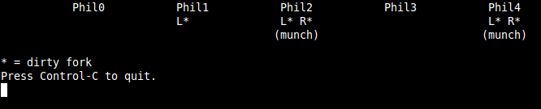

CS2 Assignment 6: Multithreading and concurrency
Due Tuesday, February 18, 2014 at 17:00
Introduction
This is the CS2 assignment on multithreading and concurrency. This assignment consists of a debugging exercise, a warm-up exercise, and a practical application exercise.
When finished, please enclose your submission as a ZIP file named cs2week6-[NAME].zip or a tar.gz file named cs2week6-[NAME].tar.gz, and upload it to the Week 6 assignment module on Moodle.
Assignment Background
The Dining Philosophers problem
A simple and thorough problem statement for the dining philosophers is quoted here from the Wikipedia article.
Five silent philosophers sit at a table around a bowl of spaghetti. A fork is placed between each pair of adjacent philosophers.
Each philosopher must alternately think and eat. However, a philosopher can only eat spaghetti when he has both left and right forks. Each fork can be held by only one philosopher and so a philosopher can use the fork only if it's not being used by another philosopher. After he finishes eating, he needs to put down both forks so they become available to others. A philosopher can grab the fork on his right or the one on his left as they become available, but can't start eating before getting both of them.
Eating is not limited by the amount of spaghetti left: assume an infinite supply.
The problem is how to design a discipline of behavior (a concurrent algorithm) such that each philosopher won't starve; i.e., can forever continue to alternate between eating and thinking assuming that any philosopher cannot know when others may want to eat or think.
Depending on the algorithm, the system may experience deadlock (a state from which no progress can be made) or not. Any valid solution will allow all the philosophers to eat, though that may only occur after an arbitrarily long time. We may want to prevent starvation, which could occur if, for example, one philosopher gets to eat once for every five times the others do (we assume that the philosophers are identical and require the same amount of spaghetti to function). We will explore a few scenarios in this assignment.
The dining philosophers problem is obviously an abstract problem, but it does have practical applications. You could replace the forks by any shared resource — hard drives, printers, etc. — and the philosophers could be replaced by any processes competing for those resources.
What is raytracing?
Some tasks are prohibitively slow even when implemented in a compiled language like C++; one example is raytracing, and a common solution to this problem is multithreading.
We will not be asking you to write a raytracer in this assignment, but you should understand how the process works in general. Please note that the images below are shamelessly taken from Ray Tracing: Graphics for the Masses. How will we represent the real world in a graphics-friendly way? One way is to define a single point for an "eye" (the viewer) and a plane surface for the viewport (what you see on your screen). Then a pixel on the viewport is colored according to what a ray from the eye through that viewport pixel would see. In the "world," we define objects (spheres, planes, etc.) and lights (which illuminate the objects but cannot be seen themselves).
The natural question to ask now is, how do we know what color that pixel should be at all? Enter raytracing. A naive approach to this problem would be to define every possible ray extending from every light, check whether it intersects an object, and, if it does, check if the reflection will hit the viewport. This is a very bad idea! All the rays that didn't intersect an object or the viewport will be deleted, so there was no point in calculating them anyway. A scheme like this is visualized in the figure below. See all the wasted rays?
Clearly, this is not the best way to proceed. What if we work the problem backwards? Trace every ray from the eye through the viewport; if a ray intersects an object, check to see if light would illuminate that point and, if so, color the viewport accordingly. All of those rays must intersect the viewport, which means much less waste (compare the image below with the previous one). This should give you a basic idea of how the provided raytracer works. If you're more curious you can look at Cornell's Raytracing Basics.
For a 600x800 pixel image (the size you will be using), you must trace a minimum of 480,000 rays from the eye to the viewport, not to mention determining whether light rays will illuminate a particular point (for N lights, you would do this N times for every ray that intersects an object). That's a lot of computation, and we can improve speed by taking advantage of multithreading.
Multithreading can be used to break up a process so that independent parts of it can execute at the same time; in the best case scenario, if you have two threads executing at the same time, you could improve speed by a factor of two. You will see in this assignment that raytracing can be made significantly faster by running multiple threads at once.
Prerequisites
- g++ 4.6.x+
- libsdl1.2-dev
- libsdl-gfx1.2-dev
- libxml2-dev
- libncurses5-dev
Assignment (20 points)
For this assignment, you will demonstrate your debugging skills, solve the dining philosophers problem, parallelize a provided singlethreaded raytracer.
Part 0: Debugging
Part 1: Dining Philosophers
The full problem statement is given in the Assignment Background above. These objectives are to be completed in the philosophers directory.You will be working with three main C++ classes: Fork, Philosopher, and TalkingPhilosopher. Some of these are incomplete, and you will be asked to fill in specific parts to demonstrate two different solutions to the problem. The code that spawns each philosopher in a new thread and calls the correct function to determine his behavior is provided for you. We also provide, in Thread.h, classes Thread, Mutex, and Semaphore for you to use.
To make your task easier, we have provided a simple visualizer for the philsophers-forks system. An example of the output is shown below. Forks that are unclaimed will appear between the philosophers; claimed forks appear under the philosopher who has them. The asterisk indicates a dirty fork. Remember that the system wraps around at the ends!
One way to prevent deadlock is to limit the number of philosophers that can sit at the table at any one time, which limits the number that are competing for forks. We'll call this solution waiter, since it is as if the philosophers must ask a waiter for permission to sit down.
In October 1984, K. M. Chandy and J. Misra published a paper in ACM Transactions on Programming Languages and Systems (volume 6, number 4, pages 632-646) describing their own solution to this problem. It can be extended to an arbitrary number of agents (philosophers) and resources (forks), but it breaks the condition that the philosophers cannot speak to each other; it also prevents starvation. Again, the Wikipedia description is quite thorough, so I will quote it here:
- For every pair of philosophers contending for a resource, create a fork and give it to the philosopher with the lower ID. Each fork can either be dirty or clean. Initally, all the forks are dirty. [This part has been done for you.]
- When a philosopher wants to use a set of resources (i.e. eat), he must obtain the forks from his contending neighbors. For all such forks he does not have, he sends a request message.
- When a philosopher with a fork receives a request message, he keeps the fork if it is clean, but gives it up when it is dirty. If he sends the fork over, he cleans the fork before doing so.
- After a philosopher is done eating, all his forks become dirty. If another philosopher had previously requested one of the forks, he cleans the fork and sends it.
Part 2: Raytracing
You should familiarize yourself with the provided raytracer framework in the raytracer directory. The following classes may be particularly important.
- Entity: A base class for world objects, which determines all the functions such an object must have. The only Entity that is currently defined is the Sphere. Relevant files are src/Entity.h, src/Sphere.h, and src/Sphere.cpp.
- Light: A Light describes a virtual light in world space. Remember that lights cannot be seen themselves, but their effects can. The only Light that is currently defined is the PointLight. Relevant files are src/Light.h, src/PointLight.h, and src/PointLight.cpp.
- Ray: Defines a geometric ray with an origin (a Vertex) and a displacement (also a Vertex). Thus, the endpoint of a Ray is just the origin plus the displacement. Relevant files are src/Ray.cpp, Ray.h, and src/structs.cpp.
Other classes may generally be treated as black boxes, and you will find full documentation when you generate the Doxygen. You will be using the RaytracerSinglethreaded::run() function as a guideline to write the RaytracerMultithreaded::run() function. You can view the raytracer output by running bin/raytracer at a terminal prompt, with the appropriate option for single- or multi-threaded.
Helpful hints
You cannot call a member function from a thread directly; if this is something you would like to do, you will need to wrap it in a non-class function first, like this:
class Foo
{
Foo() { }
~Foo() { }
void f() { /* Do something interesting here. */ }
};
void *f_wrapper(void *arg)
{
Foo *fptr = (Foo *) arg;
fptr->f();
}
Foo *f = new Foo();
Thread *t = new Thread();
t->run(f_wrapper, (void *) f);
The overhead associated with creating a thread is high, so you should try to create as few threads as possible and give them as much to do as possible. You will need at least a dual-core processor to observe the increased frames-per-second rate from multithreading.
The Makefile provided has a callgrind target that produces a file which you can view with kcachegrind if you would like. It will tell you how many times each function was called, how long it took to run, who called it, etc. If your code is unreasonably slow, this is a good debugging tool. However, if you use this Makefile target, you will need to make clean and make raytracer afterwards to revert to the normal behavior.